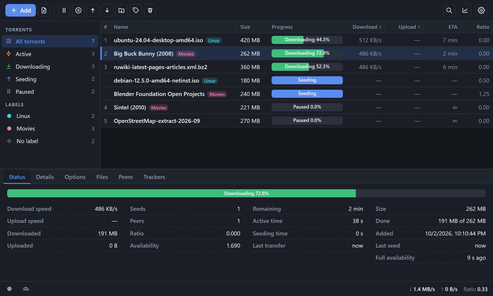
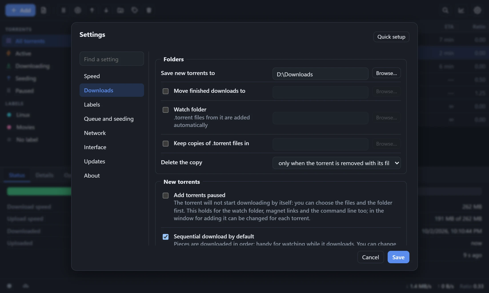

Download it, run it, start downloading. No keys, accounts or servers. A window, a tray icon and auto-update, like any ordinary program.

Add by link, file or drag and drop. Create your own .torrent files, use a watch folder.
Sequential download and a file link for your player: video and music play as they arrive.
Download queue, speed limits, a scheduled "turtle" mode, ratio and seeding-time limits.
UPnP / NAT-PMP port mapping, DHT, PEX, uTP, encryption, IPv6.
Labels with folders and colors, search, filters, configurable columns, dark and light themes.
Live speed and counters in the tray menu, autostart, auto-update with a checksum check.

Equinox-Setup-…exe | Installer. Installs for the current user, no administrator rights needed. | site · GitHub |
Equinox-pc-…zip | Portable version: window and tray, no installation. | site · GitHub |
Equinox-server-…zip | Windowless version: the interface opens in a browser. | site · GitHub |
Requires Microsoft Edge WebView2 Runtime (included in Windows 11 and most Windows 10). Builds are unsigned, so SmartScreen may warn on first run: "More info" → "Run anyway".